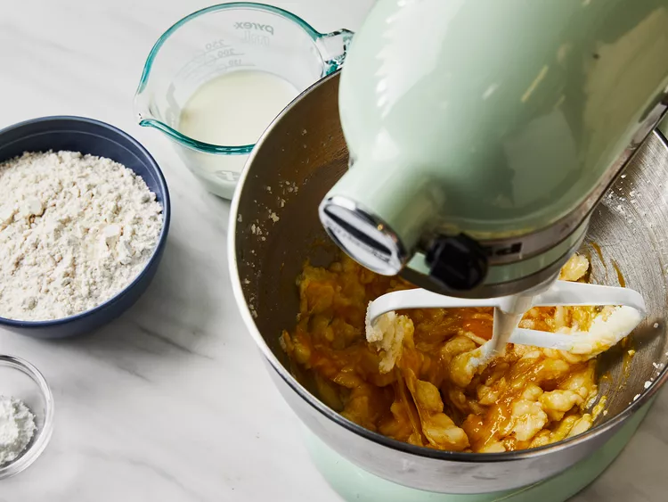
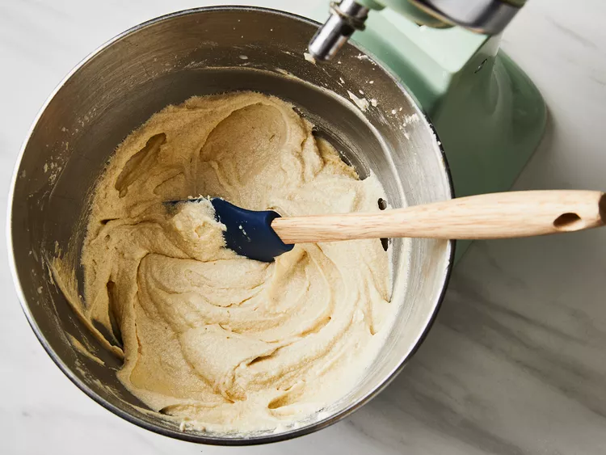
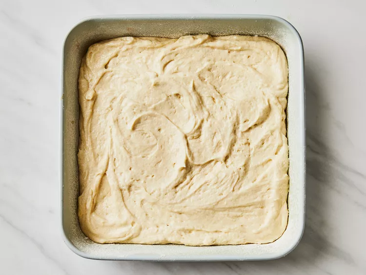
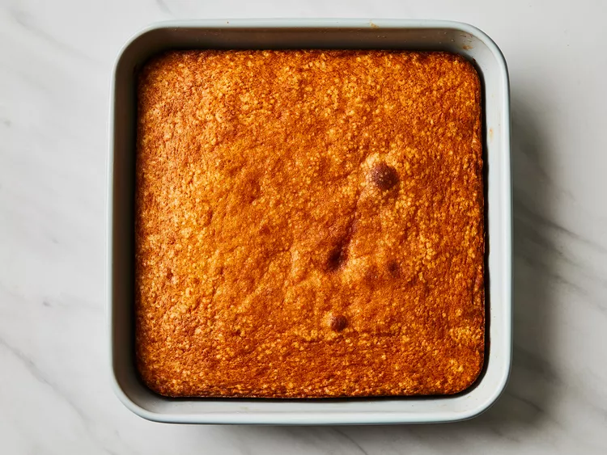
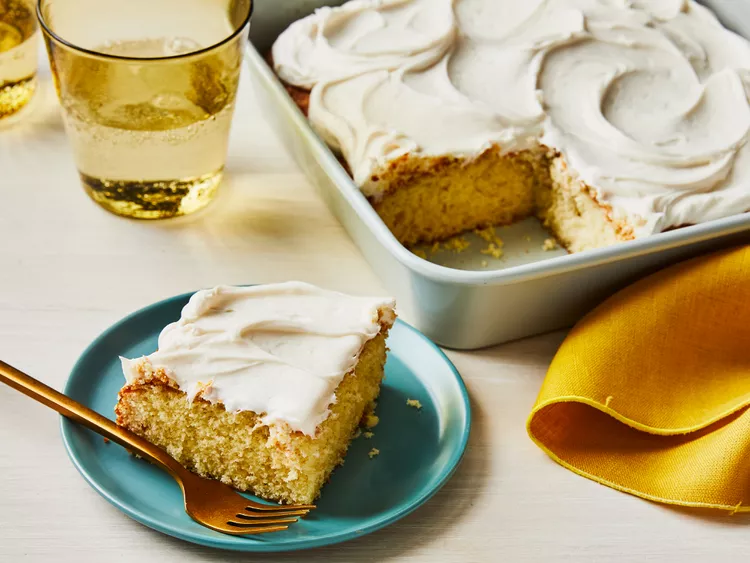

This simple cake recipe was sent home from our children's school. It is the easiest, best-tasting cake I've ever made! It's great to make with the kids, especially for cupcakes. Use your favorite frosting on top of this delicious cake.
Baking a cake is a rewarding but straightforward process. Start with a clean workspace, gather your ingredients, and preheat the oven. Cream butter and sugar until pale, then add eggs and flavorings. Alternate adding dry ingredients and wet components, being careful not to overmix. Pour the batter into a prepared pan and bake until a toothpick comes out clean. Let the cake cool completely before frosting or layering, and enjoy the result of your careful prep and patience. If you’d like a tailored recipe, tell me your flavor, pan size, and any dietary needs.
Gather all ingredients. Preheat the oven to 350 degreesF (175 degrees C)
Grease and flour a 9-inch sqaure cake pan
Beat sugar and butter together in a mixing bowl with an electric mixer until lighter in color and fluffy. Add eggs, one at a time, beeating breifly after each addition . Mix vanilla
Combine flour and baking powder in a seperate bowl. Add flour mixture to wet ingredient in bathces, alterning with milk, beating cake batter breifly after each addition.
Pour cake batter into the prepared pan
Bake cake in the preheated oven until a toothpick inserted into the center comes out clean, about 30 to 40 minutes
Remove from the oven and cool completely. Frost and Enjoy
